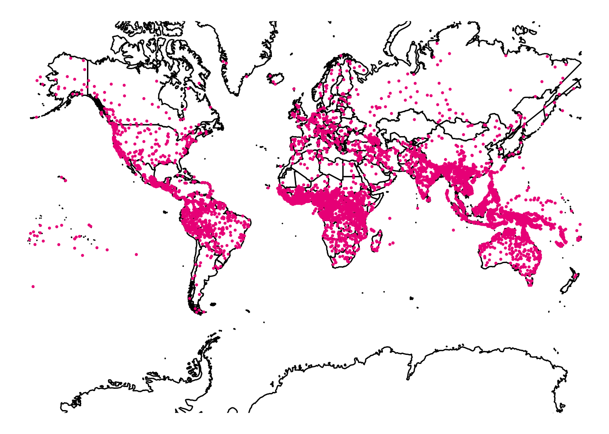
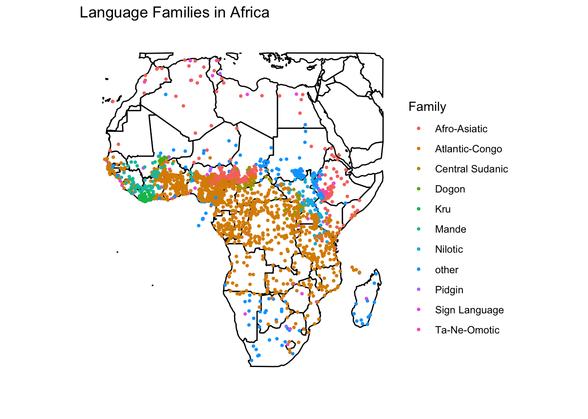

library(readr)
library(tidyverse)
library(here)
endangered_status <- readr::read_csv('https://raw.githubusercontent.com/rfordatascience/tidytuesday/main/data/2025/2025-12-23/endangered_status.csv')
families <- readr::read_csv('https://raw.githubusercontent.com/rfordatascience/tidytuesday/main/data/2025/2025-12-23/families.csv')
languages <- readr::read_csv('https://raw.githubusercontent.com/rfordatascience/tidytuesday/main/data/2025/2025-12-23/languages.csv')
languages <- languages |> filter(family_id != "book1242")
languages <- languages |> filter(!str_detect(macroarea, ";"))
theme_set(theme_linedraw())Introduction
For this post, I worked with 3 data sets of connected language data from around the globe, accessed from the Tidy Tuesday github repository. https://github.com/rfordatascience/tidytuesday/blob/9bcf450066916252422fd6add6ab184a61e62b69/data/2025/2025-12-23/readme.md. The main dataset contains 8612 distinct languages and 9 variables. For this blog post, the important variables are id, macroarea, latitude, longitude, and family_id. id is a unique identifier given to each language, related to the language’s name. macroarea is the general geographic area where the language is found. latitude and longitude are, logically, the latitude and longitude where the language is found (as a single point). family_id is the unique identifier given to each language’s family (if it has one).
Importantly, my version of this data has one family filtered out: the bookkeeping family, as this is a group of mostly unrelated, inauthentic languages that are only present in this dataset for bookkeeping purposes and are therefore not helpful for analysis.
In exploring the data, I was interested in linguistic richness around the world, as well as the patterns within separate language families. I wondered which continent had the most linguistic diversity (measured as total number of languages originating from there) and how different language families were spread across the continent.
Initial Investigation
To begin exploring this question, I looked at a map of the world, with languages added to the map as points.
world_map <- map_data("world")
ggplot() +
geom_polygon(data = world_map,
mapping = aes(x = long, y = lat,
group = group), fill = "white", color = "black") +
theme_void() +
geom_point(data = languages, aes(y = latitude, x = longitude), color = "deeppink2", size = 0.5) +
coord_map("mercator") +
xlim(c(-180, 180))Warning: Removed 164 rows containing missing values or values outside the scale range
(`geom_point()`).
For my purposes, the most important thing I can see on this map is the notable density of dots in Africa. To double-check my judgement based on the map, seeing as the dots are very crowded, I created the following graph, showing the number of languages in each macroarea present in the dataset.
languages_plot <- languages |> group_by(macroarea) |>
summarise(n_languages = n()) |>
mutate(macroarea = fct_reorder(macroarea, n_languages))
ggplot(languages_plot, aes(x = macroarea, y = n_languages)) +
geom_bar(stat = "identity", fill = "deeppink2") +
coord_flip() +
labs(y = "Number of Languages",
x = "Macroaarea",
title = "Languages in Each Macroarea")
Africa (not by Toto)
This plot confirmed my earlier judgement from the map, that Africa has the most language diversity within this dataset. This motivated me to continue my investigation of Africa and it’s languages, so I narrowed in my initial map on Africa, this time coloring by language family (with the top ten most common families in Africa being separate and all others falling into the “other” category).
africa <- world_map |> filter(lat < 38 & lat > -34, long > -18 & long < 51)
languages_africa <- languages |> filter(macroarea == "Africa")
languages_africa <- left_join(languages_africa, families, join_by(family_id == id))
africa_topten <- languages_africa |> group_by(family_id) |> summarise(n_languages = n()) |> arrange(desc(n_languages)) |> slice(1:10)
languages_africa <- languages_africa |> mutate(new_family =
if_else((family_id %in% africa_topten$family_id), family, "other"))
ggplot() +
geom_polygon(data = africa,
mapping = aes(x = long, y = lat,
group = group), fill = "white", color = "black") +
theme_void() +
geom_point(data = languages_africa, aes(y = latitude, x = longitude, color = new_family), size = .75) +
coord_map("mercator") +
xlim(c(-20, 52)) +
ylim(c(-40, 40)) +
labs(color = "Family", title = "Language Families in Africa")Warning: Removed 35 rows containing missing values or values outside the scale range
(`geom_point()`).
This map provides some interesting insights. Firstly, we can see that the most dominant language family is, by far, the Atlantic-Congo family. We can also see that, for the most part, languages from the same families are clustered together. Finally, notice that the most common family in the Northern part of the continent is Afro-Asiatic, which makes sense based on its proximity to Asia.
I have heard of quite a few African languages, but nowhere near this number, so, naturally my next motivation was to investigate the “status” of these languages. Are they mostly endangered or even extinct? The following map uses the same strategy as above but colors for status rather than families.
languages_africa2 <- left_join(languages_africa, endangered_status, join_by(id == id))
ggplot() +
geom_polygon(data = africa,
mapping = aes(x = long, y = lat,
group = group), fill = "white", color = "black") +
theme_void() +
geom_point(data = languages_africa2, aes(y = latitude, x = longitude, color = status_label), size = .75) +
coord_map("mercator") +
xlim(c(-20, 52)) +
ylim(c(-40, 40)) +
labs(color = "Status", title = "Statuses of Languages in Africa")Warning: Removed 35 rows containing missing values or values outside the scale range
(`geom_point()`).
The above graph shows that the majority of the languages in Africa are not endangered! This was very surprising to me, especially given the second most common status among these languages is threatened rather than one of the statuses closer to extinct. I was also a bit surprised to see that, for the most part, languages in similar statuses are not clustered together, I wouldn’t have been surprised if colonization of Africa had caused many languages in some areas to go extinct, but there is little evidence of spatial patterns.
Conclusion
My exploration of languages around the world and specifically in Africa was very enlightening. It is interesting to me that the data shows such an obvious wealth of linguistic intrigue in Africa, but current research efforts and cultural exchanges are not, to my knowledge, prioritizing this area. I am sure that these many language communities hold fascinating phenomenon the linguists could learn from.
One possible limitation of my data is the way in which I have distinguished “African” languages. I have relied on the macroarea variable in the dataset, which seems to be accurate, but I have also, for ease of exploration, excluded any languages from more than one macroarea. These languages would have been more difficult to plot on the map, and are less inline with my research question than Africa-unique languages. Given more time, I would’ve liked to use the is_isolate variable to explore languages without families.
Class Concepts
Using maps to explore spatial relationships between and among not only languages themselves but also their statuses was very useful. Putting points into context with other and with global geography was crucial to my analysis.
I do think, given more time, I would’ve liked to edit some aspects of the graphs. Specifically, I would’ve liked to play around with position() arguments to make clusters of dots less overwhelming and I would’ve liked to work with in-depth factor arguments to make the legends of the maps more useful.